Field Trips
 Kīlauea summit eruption, episode 27, June 2025
Kīlauea summit eruption, episode 27, June 2025
 Kīlauea summit eruption, February 2025
Kīlauea summit eruption, February 2025
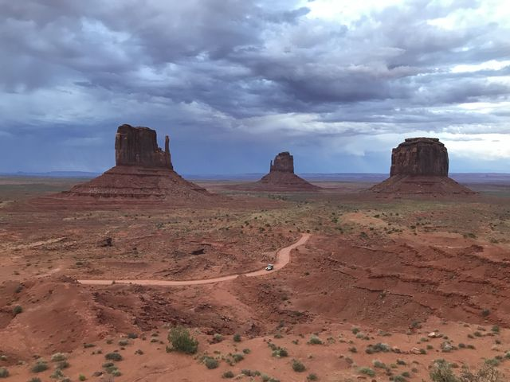
Monument Valley and Zion, August 2024 Cordón Caulle, Chile, January–February 2024
Cordón Caulle, Chile, January–February 2024
 Long Valley, Sierra Nevada and Medicine Lake, October 2023
Long Valley, Sierra Nevada and Medicine Lake, October 2023
 Honolulu, July 2022
Honolulu, July 2022
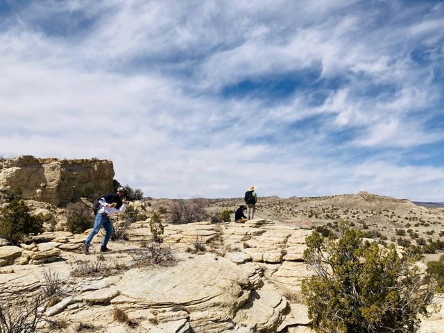
New Mexico 2022 (EEPS 334) Glass Mountain, October 2019
Glass Mountain, October 2019
 CIDER Workshop, Berkeley, summer 2019
CIDER Workshop, Berkeley, summer 2019
 Cordón Caulle, Chile, December 2018
Cordón Caulle, Chile, December 2018
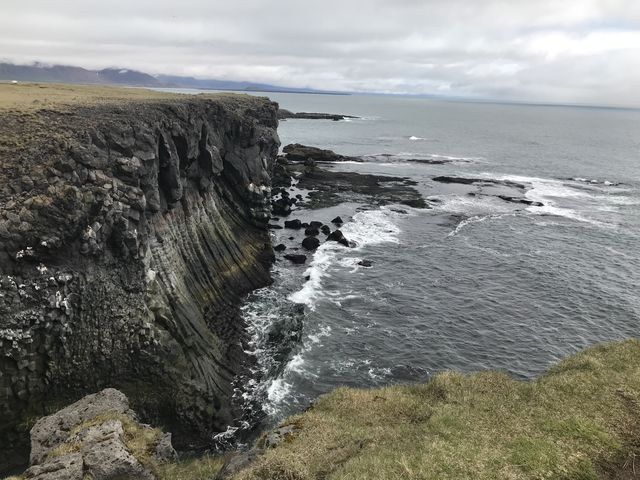
Iceland, May–June 2018 California Cascades & Northern Sierras, October 2017
California Cascades & Northern Sierras, October 2017
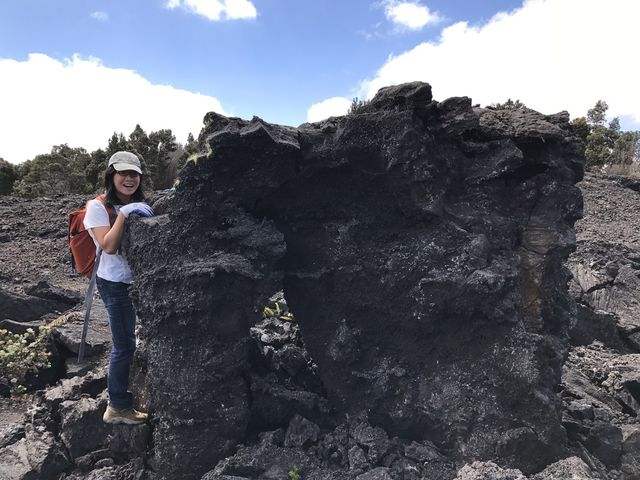
Mauna Ulu fissure, April 2017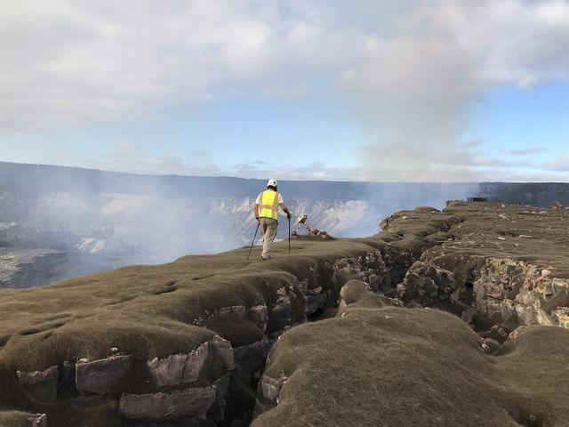
Halemaʻumaʻu lava lake, April 2017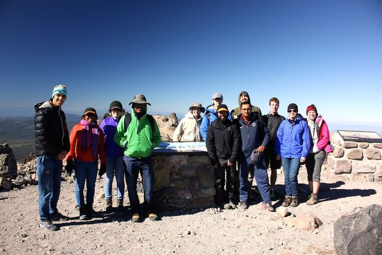
Cascades 2015 - ESCI 429/629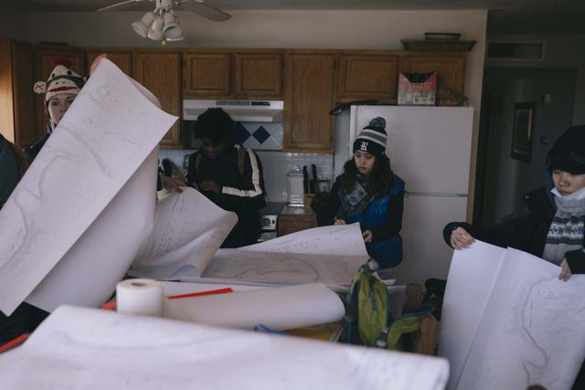
New Mexico 2015 (ESCI 334)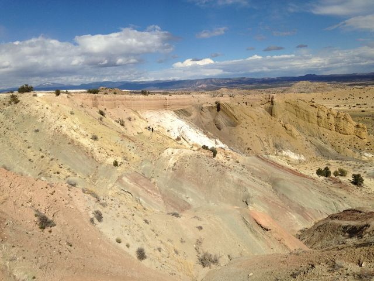
New Mexico 2014 (ESCI 334) Mount Shasta 2013 (ESCI 429)
Mount Shasta 2013 (ESCI 429)
 Kagoshima, Japan, July 2013
Kagoshima, Japan, July 2013
 Hawaii, June 2013
Hawaii, June 2013
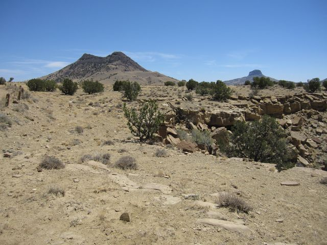
Rio Puerco, May 2013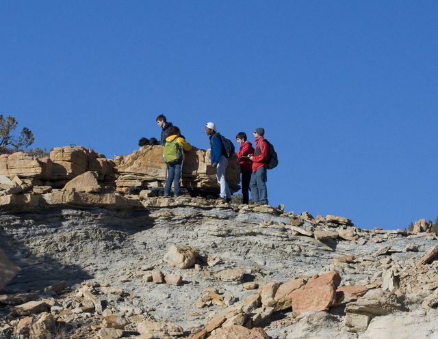
New Mexico 2013 (ESCI 334)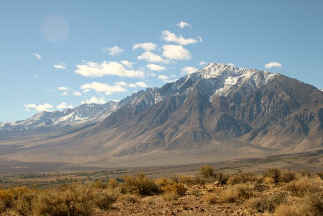
Long Valley 2012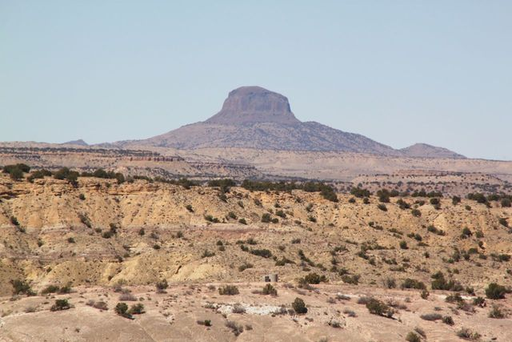
New Mexico 2012 (ESCI 334)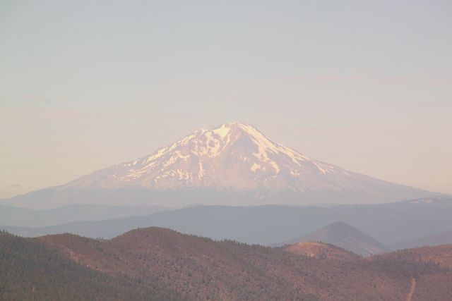
Cascades 2011 (ESCI 429)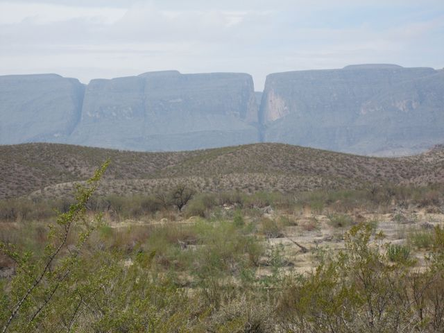
Big Bend 2010 (ESCI 334)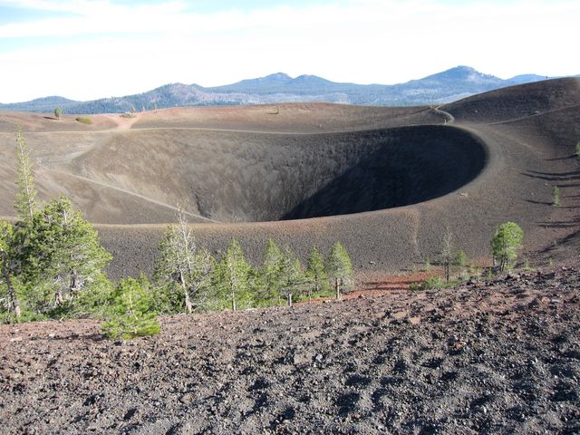
Cascades 2009 (ESCI 429)